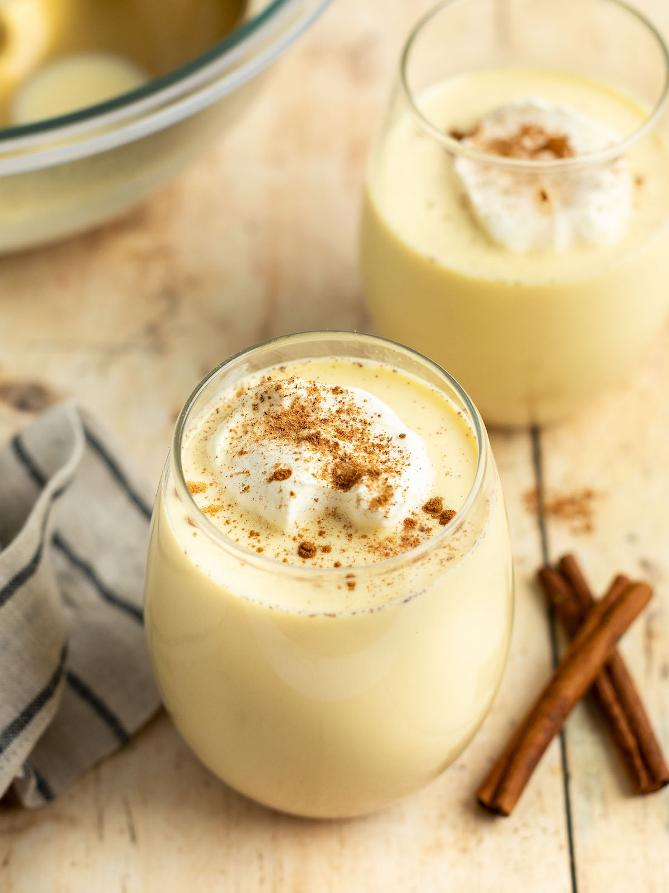

Eggnog

Description
This eggnog recipe for thick, creamy, and sweet eggnog with just the right amount of spice took me several years to perfect. The egg yolks are tempered for safety, and you can adjust the amount of rum to taste, or leave it out entirely so the whole family can enjoy this rich holiday treat. It's a bit of work to make, but well worth it. Once you taste it — you'll never serve store-bought eggnog again!
Ingredients
- 4 cups milk
- 1 teaspoon ground cinnamon
- 5 whole cloves
- 2 ½ teaspoons vanilla extract, divided
- 12 large egg yolks
- 1 ½ cups white sugar
- 4 cups light cream
- 2 ½ cups light rum (Optional)
- ½ teaspoon ground nutmeg
Steps
- Gather all ingredients.
- Combine milk, cinnamon, 1/2 teaspoon vanilla, and cloves in a saucepan over the lowest heat setting; stir and heat for 5 minutes. Increase heat to medium-low and slowly bring to a boil. Remove from the heat.
- Pour some of the hot milk mixture into the egg yolk mixture, whisking quickly to avoid scrambling the eggs. Continue adding hot milk and whisking to combine until all milk is incorporated.
- Pour the mixture back into the saucepan. Cook over medium heat, stirring constantly, until thick, about 3 minutes; do not allow the mixture to boil.
- Strain to remove cloves and let cool for about 1 hour, then stir in cream, rum, remaining 2 teaspoons vanilla, and nutmeg. Refrigerate before serving, 8 hours to overnight.
- Serve and enjoy!